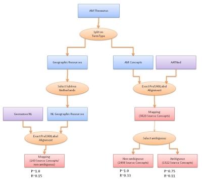
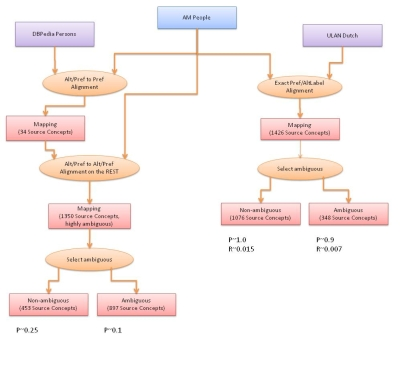

We provide a first alignment of the AM thesauri to (Europeana) Linked Open Data vocabularies, thereby linking the Amsterdam Museum to the LOD cloud. To generate the mappings, we use the AMALGAME tool, which is under development at VU Amsterdam. We aligned the concept thesaurus as well as the people database. We present the initial results below. Further work is needed to determine the exact quality of the mappings and to derive more mappings using the tool. The links can be explored through the Europeana Semantic Layer. In the near future, we will add sample queries here.
Concepts
The concept thesaurus is mapped to two thesauri: the geographical concepts are mapped to GeoNames concepts (only the Dutch subtree) and the rest is mapped to a Dutch version of the Art and Architecture Thesaurus (AATNed). We only use links that have a relatively high estimated quality (based on an informal sample evaluation). This yields 143 links to GeoNames NL and 2498 AM concepts linked to AATNed. A further 1322 links can be presented for human evaluation.
This workflow is depicted in the figure below:

(click to enlarge).
People
The People database is also mapped to two thesauri: a subset of DBPedia containing persons and the Dutch subset of Getty's Union List of Artist Names (ULAN). Again we only select links with a high estimated quality. This results in 1076 AM persons matched to ULAN and another 34 matched to DBPedia. Additionally, low-precision mappings are found that can be checked by human evaluators or used for further automatic processing.
This workflow is depicted in the figure below:

(click to enlarge).
{kind=link}
{kind=link}